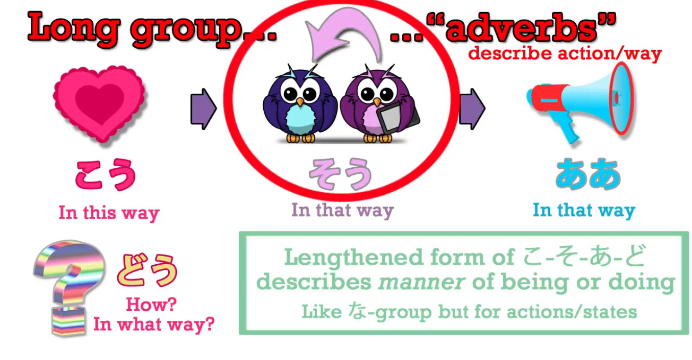
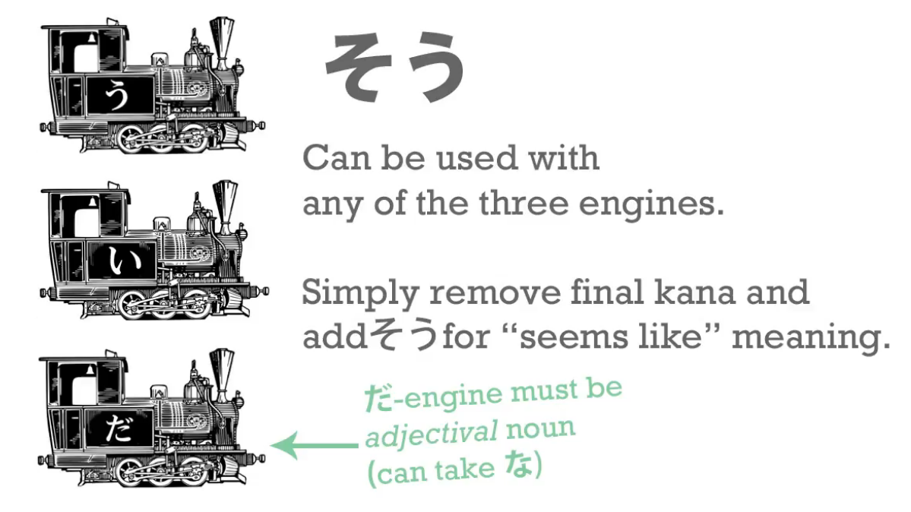
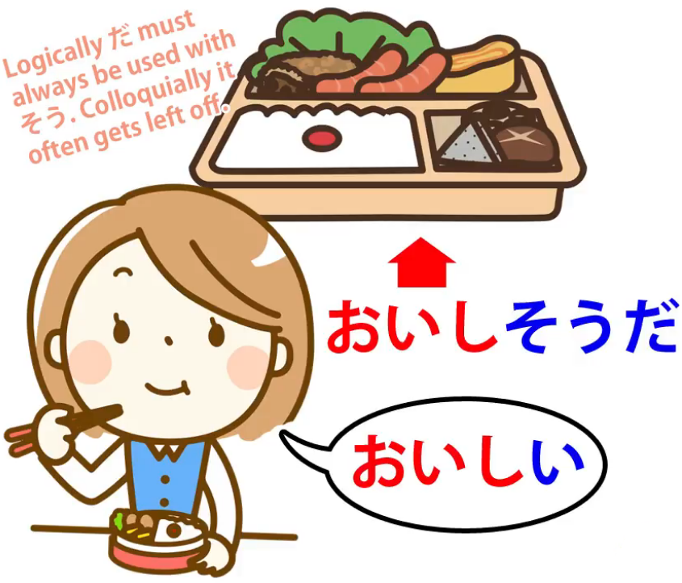
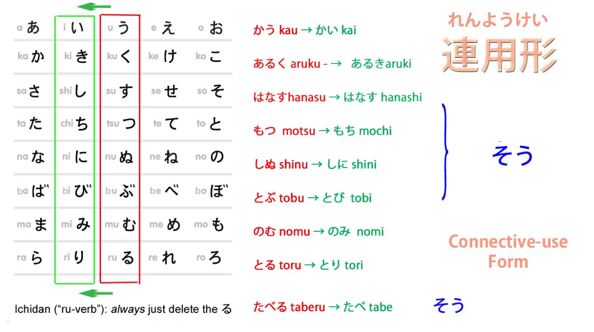
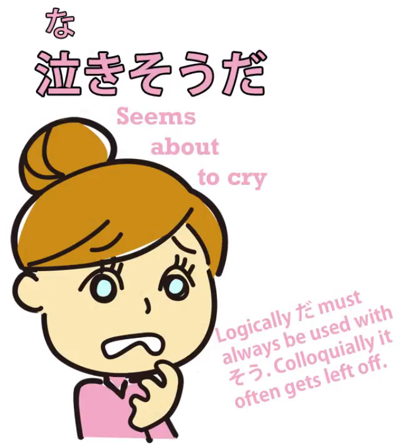
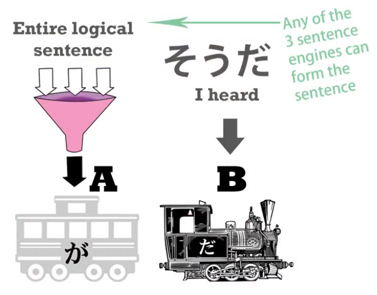
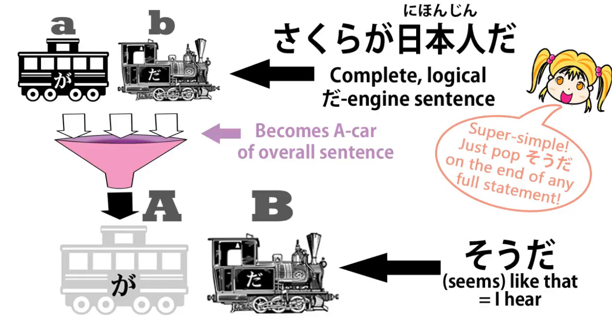
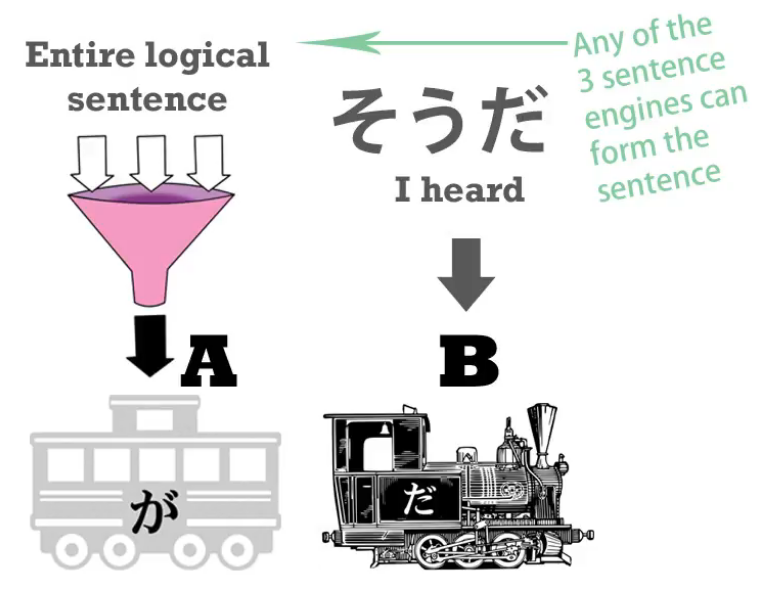

24. Hearsay & guesses - そう・そうだ・そうです
Lesson 24: Hearsay and guesses! 〜sou da, 〜sou desu - how they REALLY work.
こんにちは。
Today we're going to talk about the helper noun そう,
which can mean either likeness or hearsay,
either that something seems like something or
that we are stating not our own view or opinion but something we've heard.
Differentiating the two can seem difficult, especially when the textbooks give you a list of connections to nouns and verbs and various different things.
It's much less complicated when you understand the underlying principle, what's actually going on with そう.
So you don't have to memorize a lot of different things.
So, first of all, what is そう?
It's the same そう that we learned about recently that comes in こう-そう-ああ-どう.
(Lesson 20)

So そう means like that, which makes it of course a very good candidate
for describing something seeming like something.
そう as seeming like something
When it's used in that way, we use it by attaching it to any one of the three engines.

And remember, as we've learned before, that each of the three engines can be moved behind other cars to turn them into adjectives. (Lesson 6)
Now, once -そう has been attached to an engine
the engine becomes a new adjectival noun.
How do we attach them?
We do the same thing in every case.
We take the last kana from the engine.
That is the kana that makes it what it is, its active part.
So we take the だ from the だ-engine - the だ or the な from the だ / な-engine.
We take the い from the い-engine.
And from the verb engine, we take that last う-row kana.
And we just put -そう onto them, so it's a very simple connection.
With adjectival nouns
And the important thing to remember here is in the case of nouns
we can't do it with an ordinary, regular noun.
We can only do it with an adjectival noun.
In other words, if an adjectival noun is an adjectival noun to start with,
we can turn it into a different adjectival noun with -そう.
If it wasn't an adjectival noun to start with, it can't be turned into an adjectival noun.
So if we take adjectival nouns like 元気 (lively or healthy) and 静か (which is quiet) -
if we say 静かだ we mean is quiet - if we say 元気だ we mean is lively or healthy.
If we say 元気な学生, we're saying a lively or healthy-is student.
Now if we take off that だ or な and put on -そう - and we say 元気そうな学生,
we're saying a lively looking-is student/ a lively seeming-is student.
Similarly, if we say 静かな女の子, we're saying a quiet-is girl.
If we take off that -な or だ and put on -そう and say 静かそうな女の子, we're saying
a quiet-seeming-is girl/ a quiet-looking-is girl.
So that's really very simple, isn't it?
::: info
As shown above, we take off the だ / な from the OG adjectival noun, but then when we connect -そう after it, we then still use the だ / な, but it instead comes from the そう part.
It may be framed a bit confusingly, considering the examples Dolly gives still contain だ / な.
:::
So just in case, to avoid possible confusion…
Because apparently そう is an adjectival noun itself, so the だ / な probably attaches to そう.
Here, 静か is an adjectival noun to which is attached そう, another adjectival noun, that seems to serve as a suffix to which is attached な to connect it with 女. So 静かそうな is one unit.
This would align with Dolly’s orange comment just below about copula being used with そう.
This is just my limited understanding, so take this with a grain of salt. Contact me if I am wrong.
With adjectives
With adjectives that end in い, we simply take off that -い and put -そう onto it.

::: info
Do carefully note that orange comment above on the picture with そう + だ.
So, if we take 面白い (interesting-is or amusing-is), おいしい (delicious-is*),
:::
we just cut off the -い and add -そう.
So, 面白い means interesting-is or amusing-is, 面白そう means
seems interesting / seems amusing.
おいしい means delicious / tasty-is, おいしそう means it looks delicious, it looks tasty.
And this is an important one to remember because, as we've mentioned before,
Japanese is a lot stricter than English in restricting us to saying
only things that we can actually know for ourselves.
So unless you've tasted something, you can't say it's おいしい.
Unless you've done something, you can't say it's 面白い - interesting or amusing.
Logically this perhaps ought to be so in English, but Japanese is a lot stricter about it.
So, it's important to know things like 面白そう, おいしそう
if we haven't actually tasted the food, done the activity or whatever.
With verbs
Now, with a verb we cut off the う-row kana.
Obviously, as always, in the case of ichidan verbs that's all we do.
And in the case of godan verbs we use the い-stem.

And the い-stem is what you might call the pure stem of a verb.
In Japanese it's called れんようけい/連用形, which means connective-use form.
And that might sound strange because we know that all four stems actually connect things,
but while the other three have particular uses,
the れんようけい/連用形, the い-stem, as well as its particular uses,
can be used to connect almost anything.
It can connect verbs to nouns to make new nouns;
it can link verbs to verbs to make new verbs; and so on.
So, we connect -そう to the 連用形, the い-stem,
the general-purpose connecting stem of verbs.
What do they mean?
Well, generally speaking, they mean that something appears to be about to happen.

::: info
Once again, the reminder comment about だ being used after そう.
:::
So, 雨が降りそうだ means it looks as if it's about to rain.
子どもが泣きそう(だ) means The child looks as if she's about to cry / seems as if she's about to cry.
And if you see that's quite similar to what we might say in English:
It looks like rain / it seems as if it's about to rain.
So these usages are really quite straightforward.
そう as hearsay
Now what do we do when we're using そう to mean hearsay, to mean I heard something - I'm not reporting my own observation or feeling, I'm reporting what I got at second-hand from somebody else?
Some people would say that this is also a suffix and we have to observe different rules for applying it, but the truth is that it is not a suffix.
The -そう we've just discussed is a suffix.
We join it to other words in order to form a new word.
Whatever the word was to start with, once -そう is attached it becomes an adjectival noun.
::: info Seems to point to my previous idea above… ::: ---
This is not what happens when we're talking about hearsay.
When we're talking about hearsay,
we use そうだ or そうです after the entire, complete sentence.

So the complete sentence becomes the A-car of the sentence and
the そうだ becomes the B-engine.
And the content of the sentence is now subordinate.
So let's take an example:

さくらが日本人だそうだ.
What we're saying here is I've heard that Sakura is a Japanese person.
So, Sakura is a Japanese person is all taken together as Car A, the subject of the sentence, and then what we're saying about it is that we've heard it.
Why do we use そうだ/そうです to mean I've heard?

Well, if you think about it, it's similar to what we might say in English.
Suppose we say Why isn't that car in the street any more? and you say
It seems some masked people came and drove it away.
Now, when you say that, what that means is that somebody told you that, doesn't it?
If you'd seen it yourself you'd have said Some masked people came and drove it away,
but when you say It seems some masked people came and drove it away, what you're saying is Well, that's the story I've heard.
::: info
I would check this comment too...
:::
And it's the same in Japanese only a little more systematically.
そうだ/そうです when added as the B-engine to an entire, completed sentence is always
saying that this is what we've heard, this is the information we have, for what it's worth.